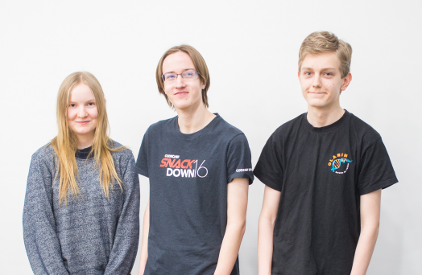

Datatähti 2018 -loppukilpailu järjestettiin 18.1.2018 Aalto-yliopiston tietotekniikan laitoksella. Loppukilpailuun osallistui 27 kilpailijaa alkukilpailusta.
Loppukilpailussa oli 5 tuntia aikaa ratkaista 7 ohjelmointitehtävää. Jokaisesta tehtävästä pystyi saamaan 0–100 pistettä.
Loppukilpailun tulokset ovat tässä:
| sija | nimi | koulu | pisteet |
|---|---|---|---|
| 1 | Juha Harviainen | Helsingin matematiikkalukio | 517 |
| 2 | Siiri Kuoppala | Olarin lukio | 517 |
| 3 | Roope Salmi | Olarin lukio | 500 |
| 4 | Olli Järviniemi | Päivölän opisto | 312 |
| 5 | Théo Friberg | Olarin lukio | 300 |
| 6 | Tuomas Karjalainen | Nurmeksen lukio | 300 |
| 7 | Santeri Toivonen | Helsingin luonnontiedelukio | 300 |
| 8 | Roope Haavisto | Helsingin matematiikkalukio | 300 |
| 9 | Joonatan Honkamaa | Tapiolan lukio | 300 |
| 10 | Ilmari Ayres | Tampereen klassillinen lukio | 300 |
| 11 | Tuukka Yildirim | Janakkalan lukio | 228 |
| 12 | Jesse Anttila | Helsingin matematiikkalukio | 201 |
| 13 | Samu Huovinen | Kontiolahden lukio | 200 |
| 14 | Pekka Ristola | Olarin lukio | 200 |
| 15 | Pinja Pessi | Päivölän opisto | 200 |
| 16 | Joona Huuhtanen | Helsingin luonnontiedelukio | 200 |
| 17 | Tuomas Katajisto | Ulvilan lukio | 128 |
| 18 | Valtteri Aurela | Olarin koulu | 128 |
| 19 | Veeti Poutsalo | Helsingin matematiikkalukio | 128 |
| 20 | Olli Mankki | Kotkan lyseo | 100 |
| 21 | Petteri Pulkkinen | Helsingin matematiikkalukio | 100 |
| 22 | Into Almiala | Olarin koulu | 100 |
| 23 | Kerkko Konola | Oulun normaalikoulun lukio | 100 |
| 24 | Mika Luhta | Schildtin lukio | 100 |
| 25 | Mikko Liimatainen | Schildtin lukio | 47 |
| 26 | Severi Kasurinen | Keravan lukio | 35 |
| 27 | Erik Karsten | Helsingin matematiikkalukio | 35 |